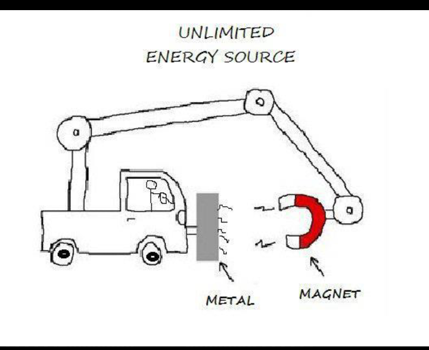
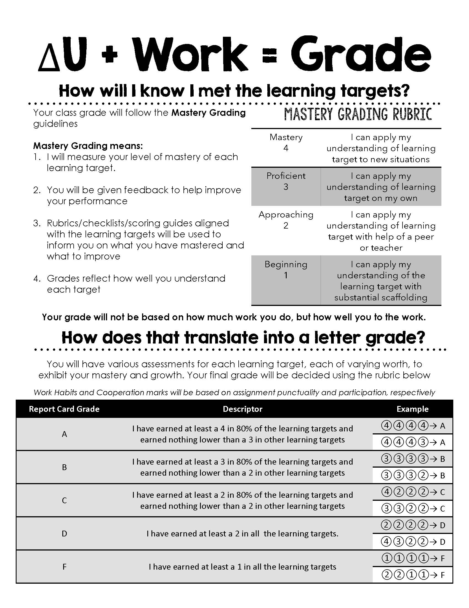

Navarrete Science
-
-

WELCOME CLASS OF 2022-2023
Welcome Scientists to our Physics Class Web Page! You are going to be using this page alot so make sure to bookmark it. I am very excited to have all of you in my classroom as we embark on this journey together called Physics. We are all going to work together, learn together, and grow together. I hope that you are equally as excited to learn about Physics as I am to teach it. Use the tabs below to view our schedule, policies and handouts.
Course Outline
The purpose of this class is to examine the concepts and ideas of chemistry. It requires the use of many mathematical techniques and applications of technology as they relate to laboratory skills and data acquisition. Many current research areas will be emphasized to provide a background necessary for student research. The major difference between this class and the regular chemistry course is the level of research that is expected of students and the mathematical detail that is used in the course.
Below is the schedule we will follow for the course
Note: This schedule is not set in stone. Stuff happens and some things may change, be we will do our best to stick to this schedule
The purpose of this class is not only to learn about chemistry, but to explore and be able explain the various of ideas that make up chemistry. We will accomplish this task by using the same mathematical techniques and technology used in the industry, developing skills necessary for successful data acquisition in a laboratory. of this class is to explain and explore the various ideas that make up chemistry. Just like in normal lab, there will be a lot of work done collaboratively. Working together is highly encouraged, however, cheating/plagiarism will not be tolerated. If you received help, give them credit. However, if you are suspected or found to be cheating, the cheating policy by the Dean of Students will be enforced.
In order to ensure no class time is wasted, make sure to come prepared to class every day with all your required materials and completed homework ready to turn in. If your homework isn’t unfinished, isn’t stapled, and/or doesn’t have your name, it is incomplete. Our time together will be used to learn, not looking for homework. Below is a list of the required materials needed for this classMATERIALS - 3 Ring Binder (only for this class)
- Pencils/Pens
- Colored Pencils
- Ruler
- Highlighers
- Scientific Calculator
COURSE POLICIES - Arrive to class on time
- Come to class ready to learn and with an open mind
- Respect the speaker, whether it is myself or a classmate
- Trust yourself to make mistakes
- If things don't make sense, ask or seek help
The schedule is updated every week through the website. There you will find the topics as well as the homework we will be completing throughout the week and their due dates. Copy them to your planner. The excuse of not knowing an assignment was due will not be accepted.
As mentioned, you will need a separate binder only for this class. You should have dividers with the following headings:
- Lecture Outlines
- Handouts
- Homework
- Labs
- Tests
The lecture notes for this class are made and distributed by the instructor. During class, your task will be to follow along and fill out the outline. This way, all your notes are in one place and if you’re absent, you know what notes to get. Guard these with your life.School today is very different from how it was in the past, allowing for easier communication between teachers, parents and students. Ensuring the success of students is an equal team effort. Therefore it is important that you also keep track of what your child is doing in class to help keep them focused.
Some recommendations are:- Follow the website to know what your child is doing. This website was made for parents just as much as it was for students. Have your child help you navigate it
- Provide a time and space for your student to do work.
- Please do not wait until the end of the semester to see how your child is doing. Check in with your child at least every two weeks to see how they are doing in the class.
- You are welcome to contact me by email, phone or office hours. Please allow 24 hours for a response. If you have not heard from me in 24 hours, follow up emails are always appreciated.
No one expects you to understand material you have never seen before on your first try. We are going to learn together, make mistakes together, and grow together. What I expect from everyone is dedication. If you need extra help, you can rewatch the lecture videos, create study groups with your peers or attend office hours. Remember that I am here to help you and will do everything that I can to provide plenty of opportunities to check for understanding and correct any misconceptions.
GRADING
Note: Assignments, such as quizzes/labs/exams, will have more weight and be worth more than one assignment
You must have your homework ready to be turned in when you arrive to class. Do not think you may spend 15 minutes or even 15 seconds looking for where you have put it, finishing one question, stapling pages together or even writing your name on it. Work is due when you arrive in the room. The same concept applies to bringing the materials, calculators and tools that are necessary for you to do your job, the job of being a student. Remember that while you are in my course, my objective is to prepare you for the real world and the consequences you will face will be of the same level as those in the real world. If you come without your tools, you can’t work and hence will not be paid that day. You will not receive credit for the work assigned or collected that day
Cheating of any type will not be tolerated. If you are caught or suspected of cheating on a homework, lab or test you will be subjected to the schools cheating policy to the fullest extent. The burden of proof does not lie with the instructor
There is no extra credit given. It is the student’s responsibility to correct any assignments.
Office hours is time meant for students to ask questions, tutor students, or simply talk to parents and students. I encourage everyone to attend office hours. Office hours can be done before school, on Schoology or through email.
PRINTABLE DOCUMENTS